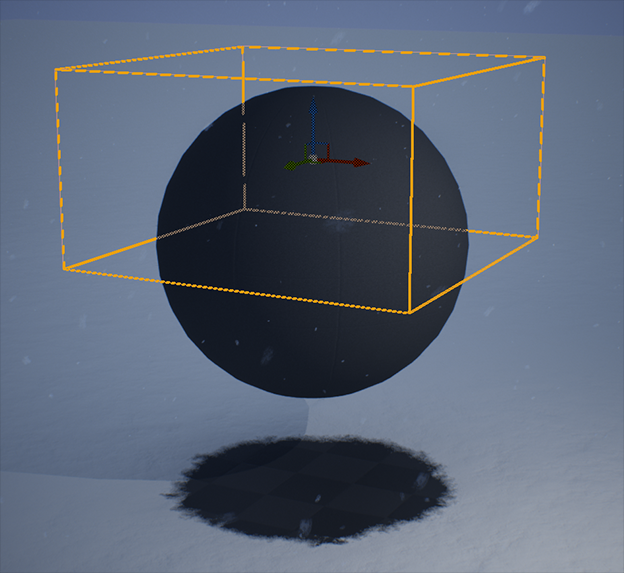

材质效果
雨雪如何“长”在材质上：表面湿润与积雪、地形积雪与踩踏痕迹、植被风动、玻璃雨滴、水面涟漪，以及用遮罩控制效果范围。
UDW 提供一组材质函数，让你的材质响应“材质状态”（material state）——积雪覆盖、湿润度、积尘覆盖。
这些函数都从材质面板搜索 Weather 找到。
| 函数 | 用途 |
|---|---|
Surface Weather Effects | 给实体表面加湿润、积雪、积尘，并可做流淌与挂珠。适合道具与建筑，不适合大范围地面。 |
Dynamic Landscape Weather Effects | 给地形/地面加动态积雪与积尘、湿润与水坑，并支持物体在雪上留下痕迹。 |
Foliage Weather Effects | 给叶片、草这类薄片材质加湿润、积雪与积尘。 |
Glass Window Rain Drips | 平面透明玻璃上的雨水流痕。 |
Foliage Wind Movement | 基于噪声与风强度输出世界位置偏移，让植被摆动。 |
Water Surface Rain Ripples | 给水面法线叠加雨滴涟漪。 |
材质状态是“渐变”还是“直给”
Material Effects 分类里有一个关键开关 Simulate Changing Material State Over Time：
- 开启（默认）：材质状态随时间缓慢变化。例如开始下雪后，积雪覆盖是慢慢涨上去的。每种天气对应的过渡时长也在该分类里设置。
- 关闭：材质状态直接取当前天气状态的值。此时从 Snow 切到 Partly Cloudy，积雪会瞬间消失，因为后者的材质积雪值就是 0。
表面效果
接入
- 在材质面板搜索
Weather，选Surface Weather Effects。 - 把它放在材质图表末尾、材质结果节点之前。
- 它使用
Material Attributes引脚（把材质所有属性合并成一个）。如果你的材质结果不是用这个引脚，就在函数前后各加一个Make Material Attributes与Break Material Attributes。 - 用
Static Bool节点给Apply Wetness与Apply Snow / Dust传 True/False。 只做湿润、不做积雪的项目，把后者设 False 可以省一点材质复杂度。
坐标空间
效果纹理默认用世界坐标映射，适合静态建筑。用在会移动的物体或骨骼网格上时，
把 Local Space 或 For Skeletal Mesh 设为 True。
流淌与挂珠
Dripping 开启水痕沿表面向下流动；Droplets 开启细小的水珠挂在光滑表面上。
两者都受 Porosity 影响：0 类似车漆、光面塑料，1 类似粗糙混凝土或沙地。
不接这个输入时，函数会用粗糙度推导。
旋转模型上的积雪方向
用 Local Space / For Skeletal Mesh 时，积雪方向会跟着模型转——因为局部空间用的是局部法线。
资源里提供了一个组件 Material Snow Dust Reorient：挂到网格下，
在 Begin Play 时把使用该效果的动态材质实例加入组件的 Dynamic Material Instances 数组。
它会周期性检查模型旋转，必要时把积雪方向缓慢校正到世界向上。速度与更新周期都可以调。
这个函数是给“实体表面”的。大面积地形请用下面的动态景观效果，否则贴图密度和性能都不合适。
动态景观效果（DLWE）
Dynamic Landscape Weather Effects V3 为地形或地面网格提供动态积雪/积尘与湿润/水坑，
还支持运行时在雪上留下痕迹。
接入
同样放在材质图表末尾、材质结果之前，用 Material Attributes 引脚穿过它；
材质没用这个引脚时，前后加 Make / Break Material Attributes。
然后用 Static Bool 给 Apply Snow/Dust 与 Apply Wetness/Puddles 传值。
交互痕迹
要产生脚印、车辙这类痕迹，用 DLWE Interaction 场景组件：把它挂在 Actor 上会移动的组件下，
或骨骼网格的骨骼上。例如角色两只脚各挂一个，分别父级到左右脚的 Socket。
Size：决定影响范围与痕迹大小，应接近所代表物体的直径。- 组件引用一个
DLWE Interaction Settings资产，里面配置交互行为与使用哪些效果。可以用默认资产，也可以新建。
痕迹只能画在玩家周围那块渲染目标覆盖的范围内，范围大小由 UDW 的
Snow / Dust Interaction Render Target Area 设置。渲染目标会随玩家移动自动重新居中；
想换基准位置（例如改用相机位置或手动向量），改 UDW Basic Controls 里的
Control Point Location Source——它同时也影响天气覆盖体积的判定位置。
Nanite 细分
DLWE 支持用 Nanite 细分表现积雪厚度：
- 项目开启 Nanite 细分，材质里勾选
Enable Tessellation；地形 Actor 也要启用 Nanite 并构建 Nanite 网格。 - DLWE 节点的
For Nanite Tessellation接 True。 Nanite Tessellation Magnitude与Nanite Tessellation Center要与材质的细分设置一致。没有现成置换的地形材质，建议 Magnitude = 1、Center = 0。- 如果底层表面本来就有置换，用
Displacement Input is World Scale控制输入的解释方式：默认 True 会按世界尺度缩放偏移以保持比例；已有满意的置换时接 False，让函数不去改它。
几个实用细节
| 问题 | 做法 |
|---|---|
| 某些表面不该产生交互音效/粒子 | 在 DLWE 分类高级选项里有两个数组：Physical Materials Which Disable Snow/Dust Sounds And Particles 与
Physical Materials Which Disable Puddle Sounds And Particles，把物理材质加进去即可。 |
| 在非地形网格上用 DLWE | 把该网格使用的物理材质加入 DLWE Interaction Settings 资产的
Physical Materials which Enable DLWE Interactions on Non-Landscapes 数组。 |
| 虚拟阴影贴图频繁失效 | 把地形的 Shadow Cache Invalidation Behavior 设为 Rigid，避免积雪用的 WPO 与 Pixel Depth Offset 不断让阴影缓存失效。 |
| 想让泥土/沙地等自定义图层也有痕迹 | 给 DLWE 的 Custom Trail Surface Mask 输入一个 0–1 遮罩（通常来自地形图层采样），
并把对应物理材质加入 Interaction Settings 的 Custom Trail Surface Physical Materials。 |
自定义图层的痕迹深度会在 0 到 Snow Depth 之间按遮罩缩放。想让痕迹最自然，建议配 Nanite 细分——
它会真正变形网格；非 Nanite 的深度效果是视差遮蔽，改不动地形底层贴图（那些贴图在进入 DLWE 之前就已经采样完了）。
植被效果
Foliage Weather Effects 与表面效果类似，但针对叶片、草、针叶这类薄片材质。
树干这类厚实不透明的部分仍建议用 Surface Weather Effects。
接入方式与表面效果一致。它多两个选项：
Push Mesh Underground With Snow：按当前积雪覆盖把整个网格往下压，可以很省事地把贴地小草“埋”进雪里。Map Snow Textures With UVs+Snow Texture UVs：使用 Nanite 植被时建议开启， 避免植被自身的风动（非材质实现）造成贴图滑动。
注意：让植被随风吹动的函数是另一个（Foliage Wind Movement），不在这个函数里。
玻璃雨滴
Glass Window Rain Drips 只用于半透明材质：在薄玻璃表面渲染折射的雨水流痕。
它修改 Base Color 与 Opacity，输出 Base Color、Emissive Color、Opacity 三个值，
三个输出都要接到材质结果上。
纹理默认用世界坐标 UV，会移动的表面必须通过 UVs 输入换成自己的 UV，否则雨痕不会跟着玻璃走。
植被风动
Foliage Wind Movement 按 UDW 的风向与风强度输出世界位置偏移。运动分三层：
| 层 | 频率 | 影响对象 |
|---|---|---|
| Small Movement | 高频 | 叶片、草尖、枝条末端 |
| Medium Movement | 中频 | 整根枝条 |
| Large Movement | 低频 | 整棵树的整体摆动（随阵风弯曲） |
三层默认都开，可以分别用 Apply 输入关掉。每层都有一个 0–1 的遮罩输入，乘在该层强度上。
植被资产通常用顶点色通道来标定哪部分该动多少，但通道约定并不统一——用别人的模型时要自己看顶点色。
Small 层的遮罩是必填的；Medium / Large 没给遮罩时会用“相对网格轴心的位置”自动生成一个粗略遮罩， 但它不知道模型结构，效果不如手工绘制的顶点色。
如果模型本身已经有一套风动逻辑，更简单的做法是不要重复叠加：用 Sample UDW Wind
取到风的状态参数，替换掉原有风动里的参数即可。
水面涟漪
Water Surface Rain Ripples 只改法线：把材质的法线接进函数，再把输出的法线接到材质结果。
另外两个输入控制涟漪纹理的缩放与对法线的影响强度。
用自己的逻辑读取天气状态
| 函数 | 输出 |
|---|---|
Sample UDW Material State | 材质积雪、积尘、湿润三个值，并且已经像天气效果函数那样叠加了覆盖体积与天气遮罩的影响。 |
Sample UDW Seasons | 四个季节各自的 0–1 权重，总和恒为 1；配合 Season Color Blend 可混合四组颜色。 |
Sample UDW Wind | 风的方向与强度的各种值与向量。 |
也可以直接引用 UDW 使用的材质参数集合 Ultra Dynamic Weather Parameters，
位置在 Materials/Weather 文件夹。
遮罩：控制效果出现在哪
默认情况下，积雪、积尘、湿润是全局生效的。要限定在特定区域，它们会采样一张“天气遮罩”渲染目标， 由两类组件绘制：
| 组件 | 做法 |
|---|---|
Weather Mask Brush |
绘制简单形状或自绘纹理（由 Brush 变量选择）。可以非等比缩放、绕 Z 轴旋转。因为本质是往渲染目标里画形状，形状始终沿 Z 轴垂直投影。 |
Weather Mask Projection Box |
捕获盒子内的网格，用它们的形状垂直向下投影遮罩。适合给建筑这类复杂结构在下方留出“不下雪”的区域。 |

笔刷的常用参数：
Mask Wetness、Mask Snow/Dust：分别控制对湿润与积雪/积尘的遮蔽程度。Cancel Masks Above：以 Actor 高度为界，禁用其上方整个矩形范围内的遮罩。
需要更自由的笔刷形状时，用 Weather Mask Brush Painter（工具栏下拉菜单或 Blueprints/Tools）
手绘一张遮罩纹理：右键平移、中键缩放、左键绘制，完成后务必点 Save，
纹理会存到关卡目录下的 UDS_LevelData。
投影盒的细节面板里可以调积雪/积尘与湿润的遮蔽量，以及画进遮罩时边缘的模糊程度。 摆放时尽量让盒子只包住需要遮挡的部分，并让长宽尽量紧凑——渲染目标的分辨率是全局共享的，浪费空间会降低精度。
想让某个材质忽略遮罩，用静态开关参数 Apply Weather Mask Brushes to Wetness 与
Apply Weather Mask Brushes to Snow 在材质层面关掉。
遮罩效果在离相机一定距离后会停止，这个距离由遮罩渲染目标的覆盖宽度决定，
可在 UDW 的 Weather Mask Target 分类里调整。
需要让某个遮罩组件的影响随时间淡出时，在组件上调用 Fade Mask Over Time。
默认每秒更新 20 次，由 UDW 的 Weather Mask Update Period 决定。